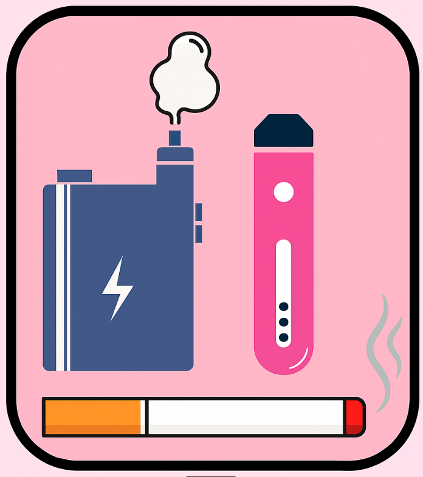

Vamos falar
sobre o vício

VAPE e CIGARRO: o que você realmente está inalando?
Informações Verdadeiras e Mitos:
Material educativo
VAPE e CIGARRO: o que você realmente está inalando?
Informações Verdadeiras e Mitos:
Muitos jovens começam a usar o vape achando que ele é inofensivo, mas tanto o Vape quanto o Cigarro podem causar dependência, problemas respiratórios e até doenças graves.
Você inala o quê, afinal?
⚠️ Um cartucho de vape pode conter tanta nicotina quanto 20 cigarros comuns.
O que o vape e o cigarro
fazem com você?
Dicas para quem quer parar:
Viver bem é respirar livre.
Escolha você, não o vício.
Quer jogar o Verdade ou Mito?
Aponte a câmera do celular para o QR Code.
✅ Acertou! No início do século XX, o cigarro chegou a ser vendido como “calmante”.
❌ Mito não! É Verdade. Hoje sabemos que isso era perigoso.
✅ Correto! Pode causar câncer de boca, garganta, esôfago, bexiga e outros.
❌ É Mito. Afeta vários órgãos, não só os pulmões.
✅ Isso mesmo! Por isso a dependência se instala tão rápido.
❌ É Verdade. A nicotina age muito rapidamente.
✅ Exato. Muitas marcas usam solventes e químicos irritantes.
❌ É Verdade. Há compostos tóxicos usados industrialmente.
✅ Isso! São absorvidos rápido e podem aumentar o vício.
❌ É Mito. Podem viciar mais que a nicotina “livre”.
✅ Isso mesmo: parar traz benefícios em qualquer idade.
❌ É Mito. O corpo se recupera bastante quando a pessoa para.
✅ Exatamente. A nicotina altera o cérebro e aumenta a busca por outras substâncias.
❌ É Verdade. Há associação com álcool e drogas ilícitas.